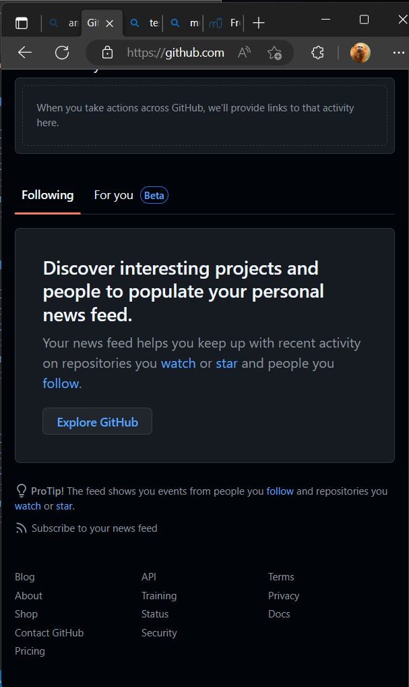
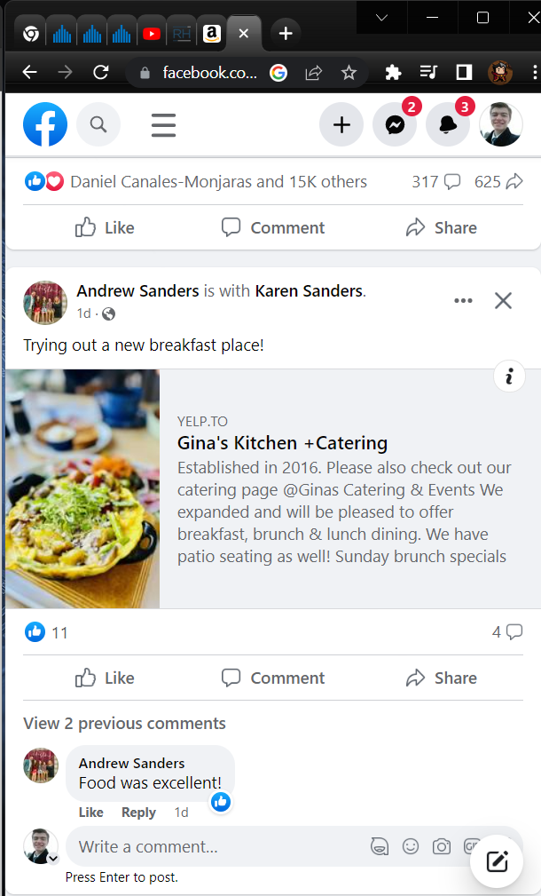
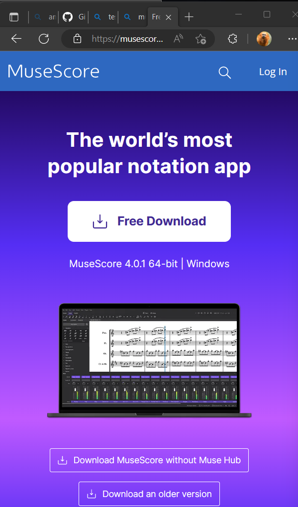

Emphasis and Contrast
Github
https://github.com/
The emphasis here is on the Repositories, surprisingly the mobile version is easier to navigate than the desktop version as everything is in a nice easy to read place. When the hamburger menu is clicked I can find everything that I need quickly. Whereas the desktop version is not as readily identifiable.
Repitition

Here we see the use of a repeated design pattern. On facebook we can see the repeated use of cards to show information a person posts and comments about it. It allows the user to to easily find information about the post.
Color
Musescore
https://musescore.org/en
I am colorblind but as far as I can see they chose good complementary colors and used them to hightlight certain elements of the page. It also adds this kind of mellow pizzazz that I find some musicians look for.